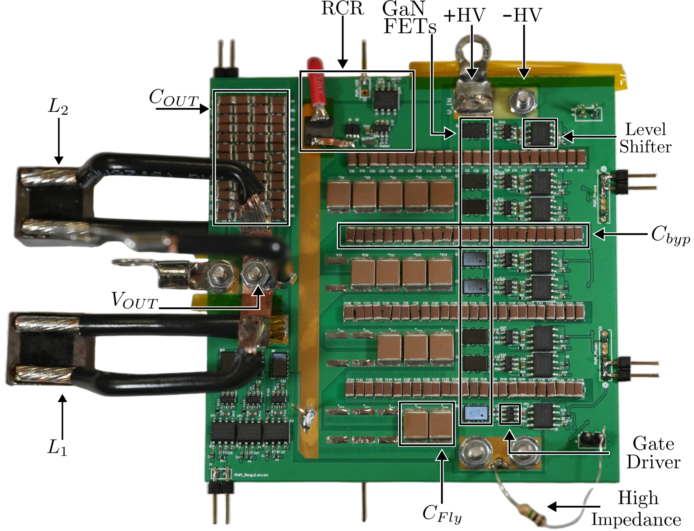

See the full publication list – jump to All Publications
Our Projects
Please browse our current and past research projects below.

This work presents a lightweight hybrid switched-capacitor (HSC) DC–DC converter for future space power systems, addressing the mass, efficiency, and environmental constraints of next-generation space applications.
In Progress
This work investigates hybrid-switched-capacitor power converter architectures capable of imposing deterministic flying capacitor voltage biases without incurring additional loss in periodic steady-state, under both loaded and unloaded conditions.
In Progress
This work reviews recent advances in hybrid switched-capacitor (HSC) ladder converters and their potential for radiation-hardened point-of-load power conversion, including direct 48V-to-1V conversion. A representative hardware prototype highlights the technology's readiness for aerospace applications.
Contact for Access